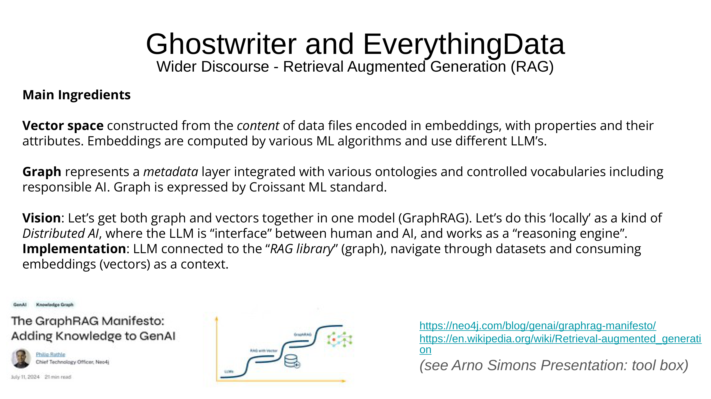
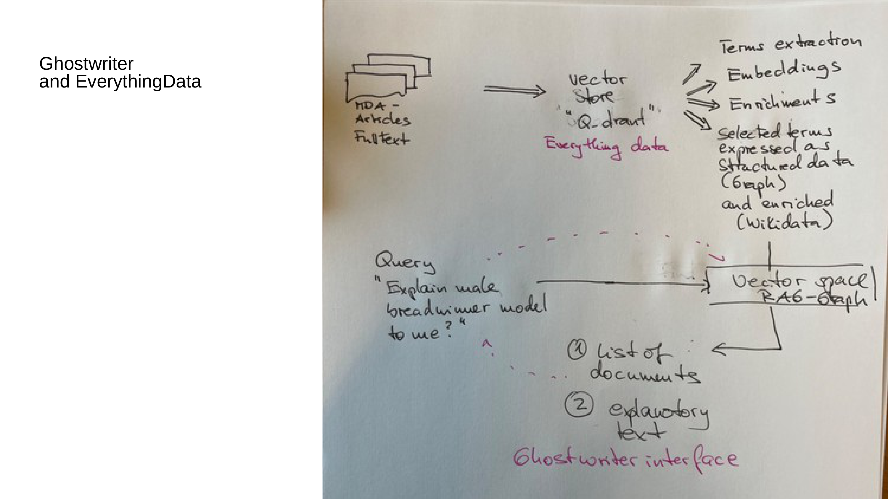
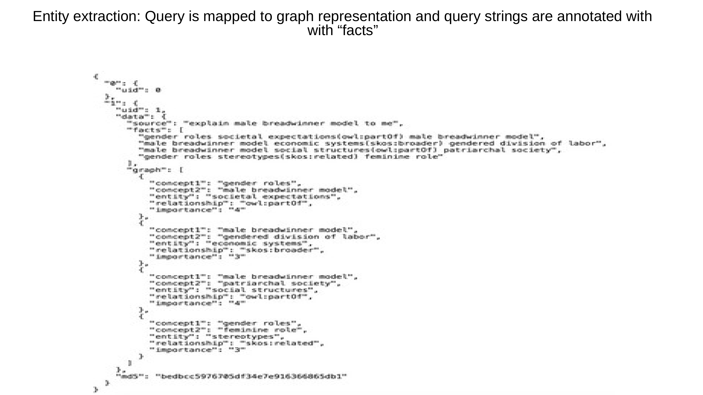
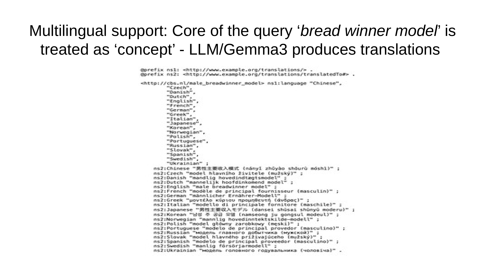
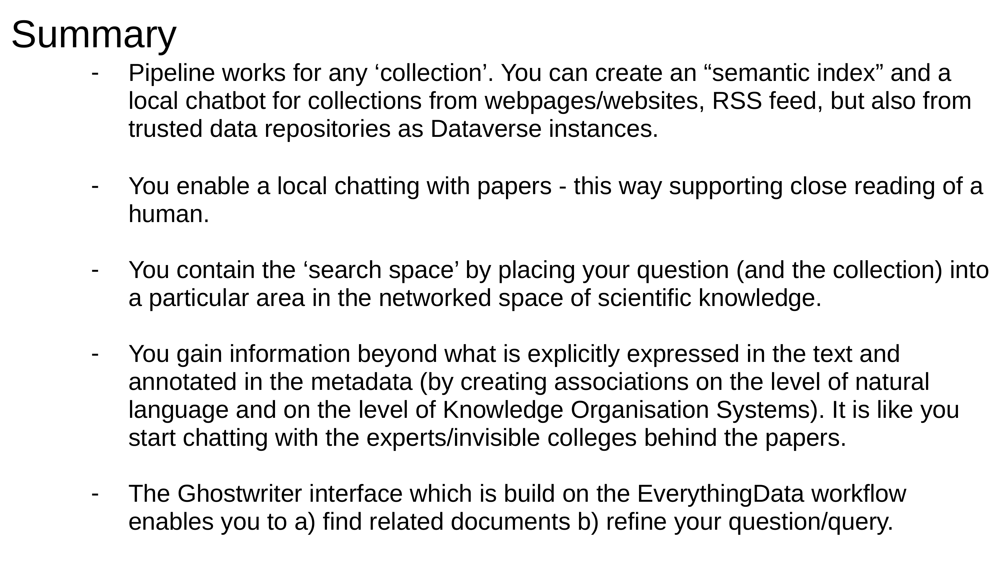
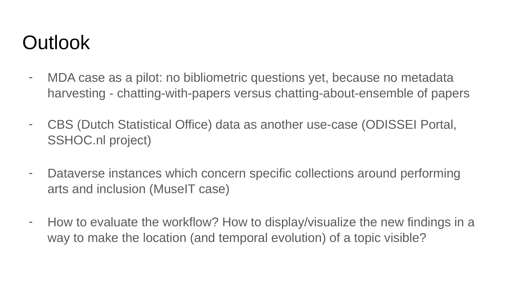

11 AI Solutions for Academic Information Retrieval: The Ghostwriter and EverythingData Approach
Overview
This presentation introduces a novel AI-driven solution, comprising Ghostwriter and EverythingData, which a collaborative team from Dans (Data Archiving and Networked Services) and GESIS (Leibniz Institute for the Social Sciences) has meticulously crafted. Their work addresses the burgeoning challenge of information overload within scientific disciplines. The system facilitates knowledge production by enabling users to ‘chat with papers’, directly engaging with the core research question: is it feasible to construct an AI solution for conversational interaction with specific collections of academic literature?
The system architecture integrates Retrieval-Augmented Generation (RAG) with a hybrid of vector and graph database methodologies. EverythingData constitutes the backend, processing raw document collections—such as full-text articles from the method-data-analysis (mda) journal—into a structured knowledge base. This process involves comprehensive term extraction, the generation of embeddings using various Machine Learning algorithms and Large Language Models (LLMs), and subsequent enrichment through external knowledge graphs like Wikidata.
For implementation, the team employs a vector store, specifically Q-drant, for content embeddings and a graph database for metadata, formally expressed using the Croissant ML standard. This hybrid ‘GraphRAG’ model combines the semantic understanding afforded by vector spaces with the relational insights provided by knowledge graphs. It fosters a ‘locally’ implemented Distributed AI where the LLM functions dually as an intuitive interface and a powerful reasoning engine.
Ghostwriter operates as the user-facing interface, facilitating natural language queries. It dynamically generates both a list of relevant documents and an explanatory text, crucially providing transparent sourcing to prevent hallucinations. The system’s iterative approach empowers users to refine their questions. Its entity extraction pipeline meticulously maps query terms to controlled vocabularies and links them to broader knowledge graph representations, thereby supporting immediate multilinguality. This robust architecture ensures that responses are rigorously grounded in the specific collection, offering a controlled search space for ‘close reading’ and enabling the discovery of associations that extend beyond explicit text or metadata.
Future developments include expanding the pilot to incorporate bibliometric questions by integrating metadata harvesting. The team also plans to apply the methodology to large-scale official statistical data, such as CBS data via the ODISSEI Portal and the SSHOC.nl project, and to extend its application to specialised cultural heritage datasets, as in the MuseIT case. Key challenges ahead involve rigorously evaluating the workflow’s efficacy and developing advanced visualisation techniques to represent the spatial and temporal evolution of research topics. The project champions a sustainable, local AI approach, reducing reliance on large industry models and fostering collaborative development within the academic community.
11.1 Science Dynamics and AI

The evolution of scientific disciplines consistently demonstrates both growth and increasing differentiation, leading to an overwhelming volume of information. This expansion presents a significant practical challenge: the imperative to efficiently review, evaluate, and select pertinent content. Fundamentally, the creation of new knowledge, whether within individual minds or across broader academia, relies upon the ability to locate and comprehend existing information.
Whilst machines, particularly recent advancements in Artificial Intelligence, have undeniably fostered this growth, a critical question arises: can they also actively support the knowledge production process itself? This inquiry forms a core challenge within the domain of Information Retrieval. At Dans, senior research engineer Slava Tikhonov has pioneered extensive experimentation, meticulously building complex data pipelines. His intricate work, though challenging to unravel, has inspired the current endeavour. The primary objective involves applying these AI-driven methodologies to manage the burgeoning flood of information, thereby addressing fundamental information retrieval challenges.
11.2 Presentation Outline and Research Question

This presentation addresses the central research question: can an AI solution be developed to facilitate conversational interaction with academic papers? The introductory segment will delve into foundational concepts, encompassing information retrieval principles, the dynamics of human-machine interaction, and the sophisticated techniques of Retrieval-Augmented Generation (RAG) within generative AI.
A concrete use case focuses on the method-data-analysis (mda) journal, providing a specific domain for application. The discussion will then introduce the bespoke workflow underpinning this ‘local’ or tailored AI solution, highlighting two principal components: Ghostwriter, which functions as the user interface, and EverythingData, a comprehensive term encapsulating the entire backend infrastructure. The talk will subsequently provide illustrations of both front-end and back-end operations, culminating in a summary and an outlook on future directions. Specifically, the AI solution aims to enable users to chat with papers derived from a carefully curated selection.
11.3 The Ghostwriter Approach: A New IR Interface

The initial challenge in effective information retrieval centres upon formulating the precise question, identifying the most appropriate information source, and accurately interpreting the resultant findings. The project team proposes the Ghostwriter approach as a novel interface to address these complexities, contrasting it with existing query interaction models.
Traditionally, information retrieval (IR) involves a query interacting with a single database representation. This necessitates the user’s explicit knowledge of the schema and its typical values to obtain results—a scenario likened to ‘Me and a database’. A more advanced model, exemplified by Google Features and schema.org, involves a query interacting with a data collection underpinned by connected structured databases or graphs. This is akin to ‘Me and a librarian’, where the system offers suggestions for similar or improved queries based on schema connections.
The advent of Large Language Models (LLMs) introduced a paradigm where a query interacts directly with an LLM, resembling ‘Me and a library’ or ‘Me and a round of experts’. Here, the system interprets natural language input and suggests results, also expressed in natural language.
The Ghostwriter approach, however, represents a significant advancement. It involves a query interacting with a local LLM, a specific target data collection, and a network of additional data interpretation sources accessed via APIs. The authors describe this sophisticated interaction metaphorically as ‘Me chatting with experts and librarians at the same time’. Ghostwriter dynamically creates a family of terms related to the query, identifies pertinent structured information, and returns a comprehensive list of results. Its iterative application empowers users to reformulate their questions, fostering a deeper understanding of what they genuinely seek to ask and what the available data space can realistically provide.
11.4 Ghostwriter and EverythingData: Core Components

Scientifically, the Ghostwriter and EverythingData system aligns with the broader discourse surrounding Retrieval Augmented Generation (RAG). This approach integrates two primary ingredients: a vector space and a graph. The team meticulously constructs the vector space from the content of data files, where information is encoded into embeddings that capture inherent properties and their attributes. These embeddings are computed using diverse Machine Learning algorithms and can leverage various Large Language Models.
Conversely, the graph constitutes a metadata layer, seamlessly integrated with a range of ontologies and controlled vocabularies, including those pertinent to responsible AI. The authors formally express this graph structure using the Croissant ML standard. The overarching vision for this system proposes combining both graph and vector representations into a singular model, termed ‘GraphRAG’. This innovative approach aims for a locally implemented Distributed AI, where the LLM functions dually as an intuitive interface between human users and the AI, and as a powerful reasoning engine.
In terms of implementation, the LLM is robustly connected to a RAG library, which effectively embodies the knowledge graph. This connection enables the LLM to navigate through extensive datasets and consume embeddings as contextual input for its operations. The conceptual design, which draws inspiration from seminal works such as ‘The GraphRAG Manifesto’ by Phipa Rathie, illustrates the progressive evolution of AI systems, moving from basic LLMs to a complex, interconnected graph structure that symbolises a fully realised knowledge-augmented system.
11.5 Vector versus Graph Databases for RAG

A comparative analysis, drawing upon insights from TheAiEdge.io, elucidates the distinct paradigms of Vector and Graph Databases for Retrieval Augmented Generation (RAG). The Vector Database approach systematically processes information by first partitioning data into discrete chunks. Subsequently, these chunks are encoded into numerical vectors using an LLM, then indexed and stored. For retrieval, a posed question is similarly transformed into an embedding, and the system identifies the nearest neighbours—semantically similar chunks—to provide as context for an LLM-generated response.
In contrast, the Graph Database approach commences with an LLM extracting relational information between entities from raw data, such as ‘MACHINE LEARNING’ and ‘FUN’ linked by ‘IS’. This process forms a structured knowledge representation organised as a network of interconnected entities and relationships, which is then stored in a Graph database. When a question concerning a specific entity arises, retrieval involves extracting a relevant subgraph from the database to pass as context to an LLM.
Further insights into vector space models reveal a document-term matrix structure, enriched by LLMs identifying semantically similar words and by knowledge graphs capturing deeper meaning. This yields a vector space founded upon distinct ‘classes’ of words, which in turn determine weights and facilitate a more sophisticated understanding of document similarity.
11.6 System Architecture
The Ghostwriter and EverythingData system architecture systematically transforms raw textual data into a structured, queryable knowledge base. The process commences with a collection of full-text articles, exemplified by the MDA Journal, serving as the primary data source.
This full text undergoes comprehensive processing within the EverythingData backend. Information is initially stored in a Vector Store, Q-drant, which houses all data. From this store, the system executes several critical operations: it extracts key terms, converts text segments into numerical vector representations (embeddings), and adds further contextual information through enrichments. Crucially, selected terms are then expressed as structured data within a graph, subsequently enriched with external knowledge from Wikidata. This structured and enriched data then feeds into a Vector space RAG-Graph.
Users interact with the system via the Ghostwriter interface, posing natural language queries such as ‘Explain male breadwinner model to me?’. The system processes this query through the Vector space RAG-Graph, producing two distinct outputs: a list of relevant documents and a concise explanatory text. The authors clarify that whilst the system begins with MDA Journal articles, any document collection could serve as input. Coupling this process with knowledge graphs enhances the value of the embeddings, ultimately feeding into a unified system that delivers both document lists and summarised responses.
11.7 Ghostwriter: Content Indexing

Ghostwriter functions as a dedicated tool for content indexing, enabling the ingestion of documents and webpages into a queryable collection. The mda methods, data, analyses journal website serves as a primary content source. The Ghostwriter tool itself, residing on the gesis Leibniz-Institut Sozialwissenschaften platform, presents distinct sections for ‘Ask Questions’ and ‘Add Page’.
Within the ‘Add Page’ section, users can input a webpage URL or RSS feed, with the system supporting various source types. The interface also displays available collections and management capabilities. The current scope involves a test collection of 100 articles, acquired through web scraping, with the tool accessible at https://gesis.now.museum.
The speaker, whilst initially cautious about Large Language Models, systematically deconstructed the training process to identify specific applications. This work, though demonstrated for academic papers, is versatile enough for any web content. Crucially, the system prevents hallucinations by exclusively relying on the ingested source material; if information is unavailable, it explicitly states, ‘I don’t know’. The system achieves complex query responses by combining a relatively simple LLM with sophisticated knowledge graphs, ensuring a curated collection is built by adding papers incrementally.
11.8 Interactive Queries and Source Transparency

The Ghostwriter system facilitates interactive engagement with academic literature. When a user poses a question, such as ‘explain male breadwinner model to me’, the system provides a detailed explanation within its ‘Answer’ section. A ‘Sources’ section transparently lists the academic papers that informed the answer, complete with relevance scores.
For instance, the response to the male breadwinner model query cites ‘The Past, Present and Future of Factorial Survey Experiments’ by Treischl and ‘Gender and Survey Participation’ by Becker, both from the MDA GESIS journal. The system’s output comprises both an explanation and a list of documents, notably including those that may not explicitly contain the query terms, thereby indicating a sophisticated semantic search. The tool operates on MDA papers and is accessible at https://gesis.now.museum.
The speaker emphasises that, unlike some generative AI models, this implementation provides precise references and demonstrably avoids hallucination because it accurately identifies the information’s origin. The underlying mechanism involves splitting each paper into small, uniquely identified blocks. The LLM technique then intelligently connects and retrieves these blocks, applying weights and leveraging knowledge graphs to predict which text segments will most effectively respond to a given question.
11.9 Iterative Refinement and Verifiability

The Ghostwriter system employs an iterative approach to ensure accurate, verifiable answers. This is exemplified by its query refinement capability: an initial broad query, such as ‘Explain the male Breadwinner model to me?’, can be refined into a more specific follow-up, like ‘Explain how data were collected on male breadwinner model?’.
For such refined queries, the system transparently states if direct information is unavailable. Nevertheless, it provides valuable contextual information, noting, for example, that a study utilised German data and employed a mixed-methods research strategy. The ‘Sources’ section lists relevant academic papers, such as Treischl’s ‘The Past, Present and Future of Factorial Survey Experiments’, complete with relevance scores and direct download URLs. An interactive ‘Chat’ column allows users to pose follow-up questions directly related to specific documents. The speaker underscores that if the system lacks information, it explicitly states this limitation, whilst users retain the ability to add missing articles, thereby enhancing the knowledge base for future queries.
11.10 Entity Extraction and Multilingual Support

Behind the operational facade lies a sophisticated entity extraction pipeline. This pipeline meticulously annotates terms with semantic meaning by mapping them to controlled vocabularies, effectively transforming raw data from a numerical vector space representation into a structured knowledge graph. Furthermore, the system extends this process by linking extracted entities to broader knowledge graph representations, with Wikidata serving as a prominent example. This comprehensive linking establishes a ‘ground truth’ against which the accuracy of LLM-generated answers can be rigorously assessed.
A key capability of the system is its immediate multilinguality. This is particularly critical when processing papers in languages such as Chinese or German and expecting reliable answers in English. The underlying processes, including entity extraction and linking, inherently support multiple languages. Ultimately, an LLM completes the feedback loop by synthesising the insights derived from the knowledge graph operations into concise, human-readable ‘explanatory text’ summaries.
11.11 Query Mapping to Graph Representations

The system meticulously processes user queries by mapping them to a graph representation, whilst simultaneously annotating the query strings with ‘facts’. For instance, the input query ‘explain male breadwinner model to me’ undergoes an initial fact extraction phase, where semantic triples and relationships are identified. These facts often reference ontological relationships, such as ‘gender roles societal expectations(owl:partOf) male breadwinner model’, indicating that societal expectations related to gender roles constitute a component of the male breadwinner model.
Following this extraction, a comprehensive graph representation is constructed, comprising an array of structured objects. Each object precisely defines a relationship between two concepts; for example, one entry explicitly states concept1: 'gender roles', concept2: 'male breadwinner model', and relationship: 'owl:partOf'. The speaker elaborates that this fact extraction process systematically splits the question into smaller, manageable pieces, leveraging a knowledge organisation system that can iteratively generate new levels of terms.
11.12 Entity Linking with Wikidata

The system meticulously links entities to the Wikidata ontology, exemplified by the disambiguation and mapping of the term ‘male’ to structured knowledge. Various examples illustrate the polysemy of this term, each associated with a Wikidata entity, its label, a description, a Concept URI, and a similarity score derived from LLM embeddings.
The highest similarity score is attributed to ‘male given name’, indicating a strong LLM association. Other significant associations include ‘male’ as human sex or gender and ‘male organism’. The system also identifies technical usages, such as ‘male connector’, and distinguishes homographs like ‘Malé’, the capital of the Maldives. The speaker clarifies that this process involves linking all entities to Wikidata, thereby obtaining identifiers rather than free strings. These identifiers are inherently linked to multilingual translations, providing access to all properties and enabling queries in diverse languages.
11.13 Conceptual Translation with Gemma3

The system demonstrates robust multilingual support by treating the core of a query, such as ‘bread winner model’, as a distinct conceptual entity. A Large Language Model, specifically Gemma3, then produces comprehensive translations for this concept. The underlying mechanism employs a structured data representation, akin to RDF/Turtle, to define and translate the concept of a ‘male breadwinner model’.
This involves defining the central concept with a unique URI and associating it with an extensive list of languages, from Czech to Ukrainian. For each language, a precise translation is provided; for example, the Chinese translation is ‘男性主導收入模式’. The frequent inclusion of gendered terms in many translations underscores the specific nature of the concept. The speaker confirms that this process enables the question to be translated into hundreds of languages, with all such translations serving as queries to the LLM.
11.14 System Functionality and Benefits

This system offers a robust pipeline that functions effectively for any collection, systematically creating a semantic index and a local chatbot. The capability for ‘local chatting with papers’ significantly supports human ‘close reading’, offering an interactive tool for in-depth textual analysis.
Furthermore, the system effectively ‘contains the search space’ by integrating the user’s question and the specific collection into a particular area within the networked space of scientific knowledge. Crucially, it enables users to gain information extending beyond what is explicitly expressed in the text or annotated in the metadata. This is achieved by forging associations at both the natural language and the Knowledge Organisation Systems level, uncovering implicit knowledge and connections. The Ghostwriter interface, built upon the EverythingData workflow, enables users to find related documents and to refine their queries.
The speaker elaborates on the concept of ‘ground truth’, explaining that knowledge has been decoupled from questions and papers, allowing it to be stored independently of the model. This separation permits the use of entirely different models to produce the same list of identifiers, thereby enabling the creation of benchmarks for future generations of scientists.
11.15 Future Directions

The ‘MDA case’ currently serves as a pilot, yet future developments aim to incorporate bibliometric questions, necessitating the integration of metadata harvesting. This progression distinguishes between ‘chatting-with-papers’ and ‘chatting-about-ensemble of papers’. The project intends to expand its application to other significant use cases, including CBS (Dutch Statistical Office) data, which is intrinsically linked to the ODISSEI Portal and the SSHOC.nl project. Furthermore, the scope will extend to specialised Dataverse instances concerning performing arts and inclusion, exemplified by the MuseIT case.
Critical methodological questions for the future revolve around rigorously evaluating the workflow and developing advanced visualisation techniques to display new findings effectively. An API facilitates an automatic mode for agentic architectures, enabling the collection of results and the identification of novel knowledge within papers. The speaker underscored the inherent value of this local approach, highlighting its benefits over reliance on large, less controllable, and often costly external machines. This ‘chatting with papers’ is conceptualised as engaging with an ‘invisible college’, not merely for definitive facts, but primarily to provoke and support the human thought process in formulating precise research questions.